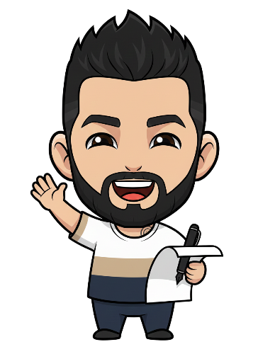
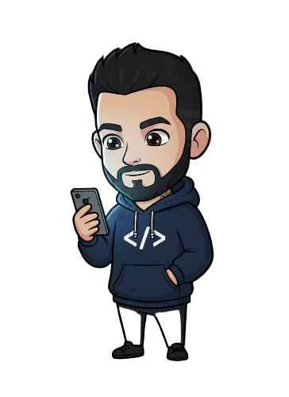

Desenvolvo interfaces web focadas em clareza, desempenho e experiência do usuário, utilizando HTML5, CSS3 e JavaScript. Meu trabalho une organização de código, identidade visual e soluções práticas para projetos pessoais e institucionais.
Criando experiências digitais modernas e responsivas
Quem sou eu

Desenvolvedor front-end em início de carreira, movido por curiosidade, disciplina e evolução constante. Criador da Lunar Code, onde aplico na prática tudo o que estudo para construir projetos reais e bem estruturados.
Habilidades
HTML5 (Semântica & Estrutura)
CSS3 (Layout & Responsividade)
JavaScript (DOM & Lógica)
Sites Institucionais & Landing Pages
Layout Responsivo (Mobile First)
Organização & Clean Code
Git & GitHub

Formação e Cursos
HTML5 – Curso em Vídeo (Gustavo Guanabara)
✔️ ConcluídoHTML5 e CSS3 – Curso em Vídeo (Gustavo Guanabara)
⏳ Em andamentoCS50x – Introduction to Computer Science (Harvard University)
⏳ Em andamentoProjetos
HTML5
Portfólio Pessoal
Site institucional desenvolvido para apresentação profissional, com foco em estrutura semântica, responsividade e identidade visual.
Ver no GitHubCSS3
Cardápio Digital
Aplicação web desenvolvida com HTML, CSS e JavaScript para simular um fluxo real de pedidos. Inclui carrinho dinâmico, cálculo automático de valores e envio do pedido via WhatsApp.
Ver no GitHubJavaScript
Site Google Glass
Projeto desenvolvido durante o curso de HTML5 do Curso em Vídeo. Site institucional completo com múltiplas páginas, HTML semântico, CSS para layout e JavaScript básico para interações.
Ver no GitHub